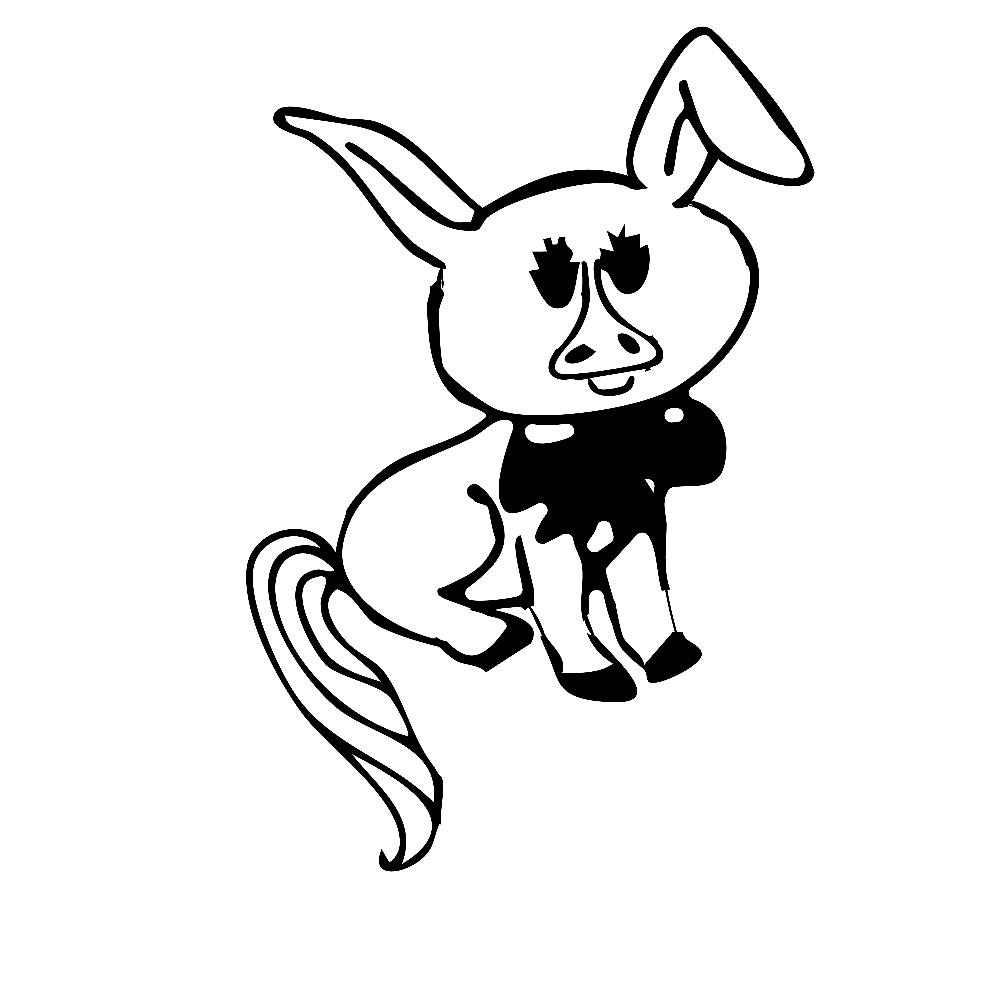

Bunny Cat (Demo 0928)
A foundational character study created in Adobe Illustrator focusing on stroke pressure, negative space, and expressive silhouette design. Developed as part of digital media curriculum to investigate how vector curves communicate gesture and whimsical character identity.